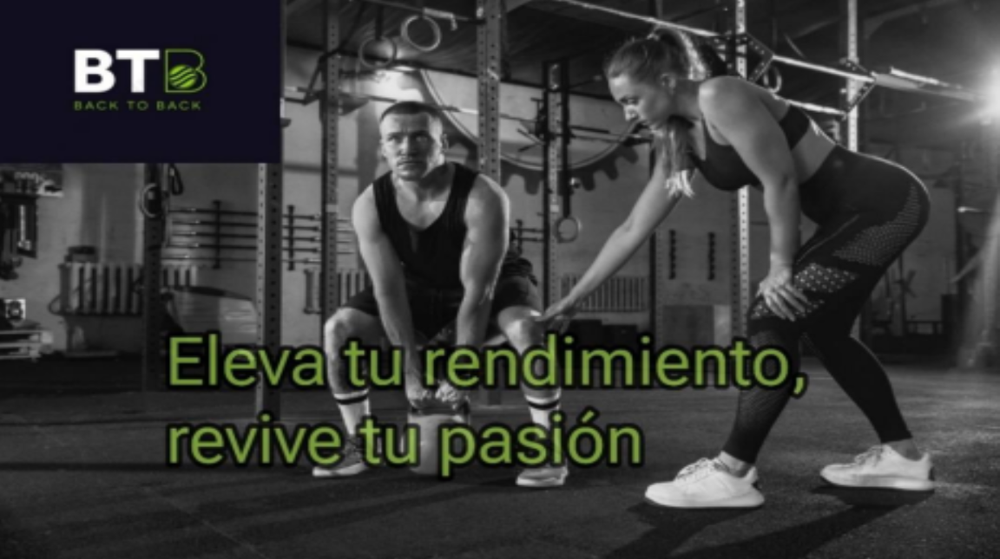
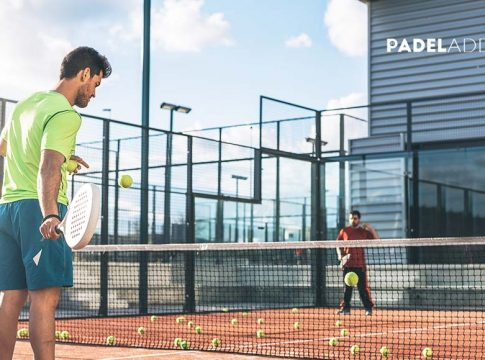
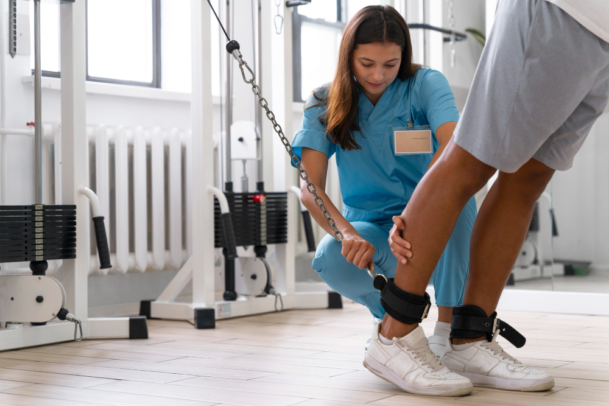
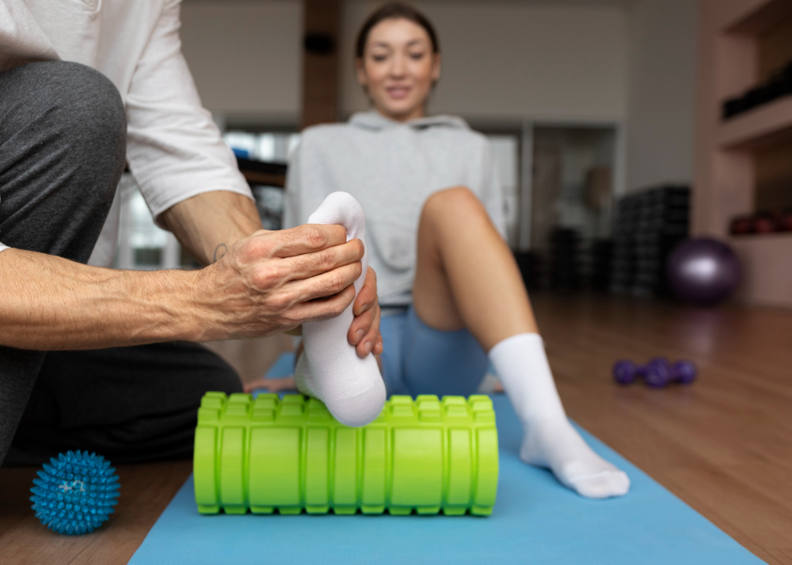
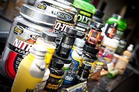
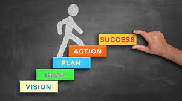
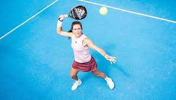

¿QUE ES BTB?
BTB es Salud, es Rendimiento, es Bienestar
Back to Back es un centro de entrenamiento personal y readaptación deportiva. Nuesta misión principal es proporcionar a las personas programas de acondicionamiento físico adaptados, con el objetivo de mejorar su calidad de vida y satisfacer sus necesidades individuales.
¿A QUIEN NOS DIRIGIMOS?
Nuestro centro está orientado a los deportistas profesionales, los deportistas amateurs, y a todas las personas que quieran acondicionar su físico, ganar fuerza, potencia, mantenerse activas y saludables. A las personas que necesitan recuperar su mejor forma tras sufrir una lesión o dolencia.
PROGRAMAS

Entrenamientos Personalizados

Entrenamientos Deportivos

Readaptación de Lesiones

Servicio de Fisioterapia
NOVEDADES

Curso de Suplementación

Psicología del deporte
